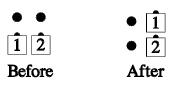
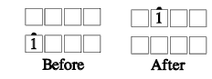

From any appropriate formation: Those designated move one dancer position forward and in the direction indicated. The directions "In" and "Out" are with reference to the center of the set. For example: "#1 Press Right:"
 
Note: This is not the same as Extend.
© Copyright 1983, 1986-1988, 1995-2011 Bill Davis, John Sybalsky and CALLERLAB Inc., The International Association of Square Dance Callers. Permission to reprint, republish, and create derivative works without royalty is hereby granted, provided this notice appears. Publication on the Internet of derivative works without royalty is hereby granted provided this notice appears. Permission to quote parts or all of this document without royalty is hereby granted, provided this notice is included. Information contained herein shall not be changed nor revised in any derivation or publication.